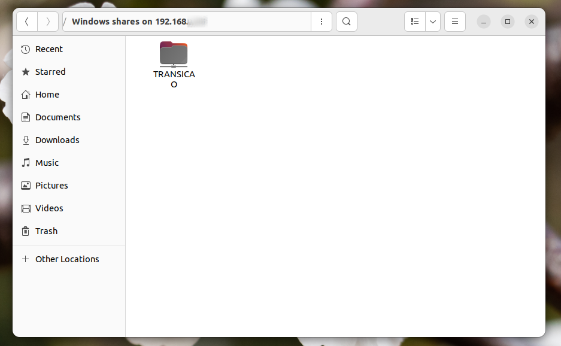
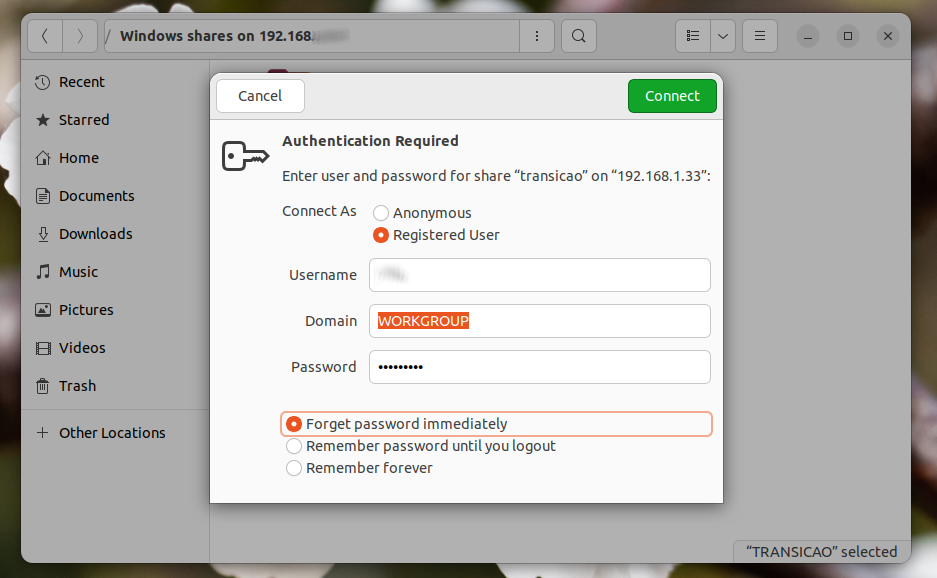
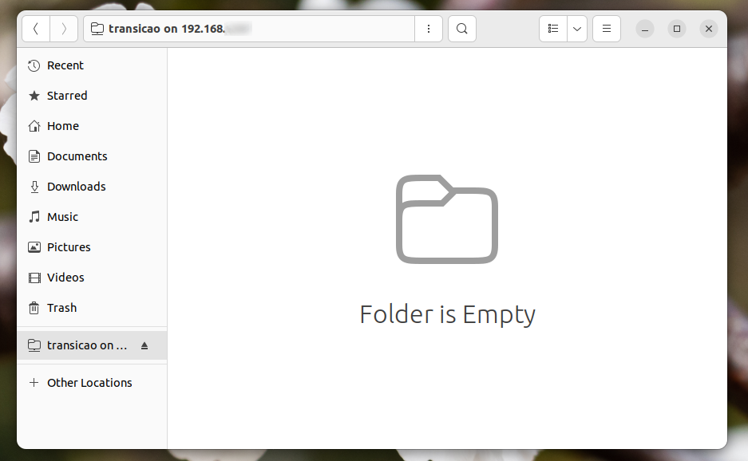
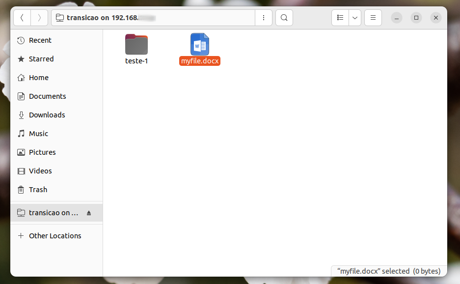
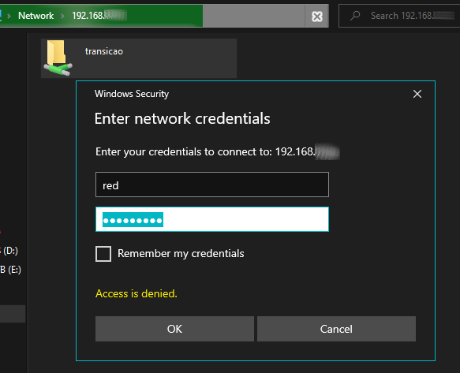
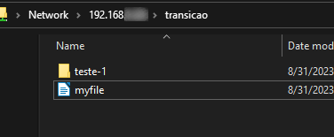
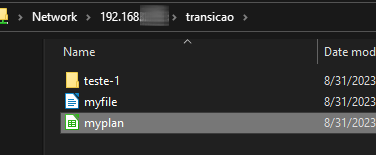
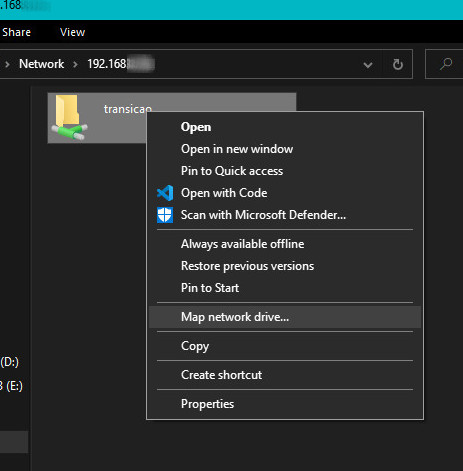
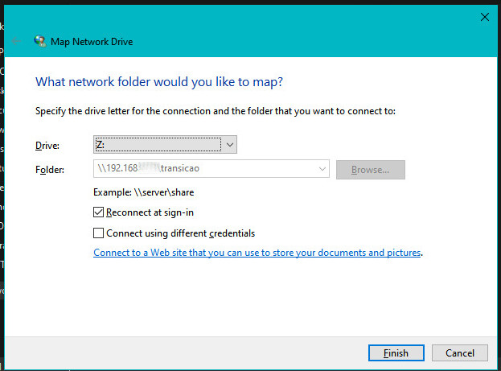

HT.Docs > Linux > Samba
09/01/2023
Indíce
1. Para quê serve o serviço Samba?
2. Instalação
3. Configuração básica
3.1. Exemplo de configuração
3.2. Testar Parâmetros do smb.conf
3.3. Iniciar / Parar serviço
3.4. Criação do Diretório Compartilhado
3.5. Criação de usuário Linux e Samba
3.6. Criação de Grupo e Inclusão do Usuário no Grupo
4. Acesso ao Compartilhamento
4.1. Acesso via Ubuntu
4.2. Acesso via Windows 10
4.3. Mapeando o Drive
5. Remoção do Samba
O serviço Samba é uma implementação de software livre do protocolo SMB/CIFS, que permite a interoperabilidade entre sistemas Windows e sistemas não-Windows, como Linux e Unix.
Ele é usado principalmente para compartilhar arquivos, pastas e recursos de rede entre diferentes computadores em uma rede local (LAN). O Samba permite que computadores Linux/Unix atuem como servidores de arquivos que podem ser acessados por máquinas Windows, facilitando o compartilhamento de recursos e a comunicação entre diferentes sistemas operacionais em uma rede.
$ sudo apt update
$ sudo apt install samba
arquivo de configuração: /etc/samba/smb.conf
# Arquivo de Configuracao de Compartilhamento
# Global #
#
workgroup=LINUX
security=user
#
# Compartilhamentos #
[MYSHARE]
comment=
path=/home/share/teste
browseable=yes # ou no
writeable=yes # ou no
validusers=@teste # ou nome do usuario
comment: Comentário descritivo para o compartilhamento.
path: Caminho do compartilhamento ex: /home/ share/docs
browseable: Diretório navegável? yes | no
writeable: Diretório com parmissão de escrita no compartilhamento? yes | no
validusers: Usuários com permissão para acessar o compartilhamento.
@grupo e nomeDoUsuario são opções possíveis.
$ testparm$ sudo service status | start | restart | stop smbdÉ necessário que seja criado o diretório no local informado no smb.conf.
$ sudo mkdir /home/share/myShare
$ sudo chmod o+w /home/share/myShare
É preciso adicionar o usuário ao ambiente linux, para depois atribuir uma senha SMB para ele.
$ sudo useradd -m nomeDoUsuario
$ sudo smbpasswd -a nomeDoUsuario
-m: cria a home folder do usuário.
-a: adiciona novo usuário SMB.
Se a segurança do compartilhamento for por grupo, é necessário criar o grupo e adicionar o usuário desejado no grupo, para que ele tenha acesso ao compartilhamento.
$ sudo groupadd nomeDoGrupo
$ sudo gpasswd -a nomeDoUsuario nomeDoGrupo
Demonstraremos o acesso ao compartilhamento em uma estação Ubuntu 22.04 e em um cliente Windows 10.
Abra seu gerenciador de arquivos.
Clique no canto inferior em "+ Outros Locais".
Informe o seguinte no campo server:
smb:\\192.168.XX.XXImagem 1 - Janela com IP para conexão ao servidor Samba.
Imagem 2 - Imagem do compartilhamento disponível.
Imagem 3 - Autenticação com usuário e senha smb.
Imagem 4 - Diretório compartilhado recém criado.
Imagem 5 - Novos arquivos criados para testar as permissões.
1º- Acesse o menu iniciar e digite:
\\192.168.X.XXImagem 6 - Executação de comando com IP para acessar o compartilhamento.
2º- Autentique-se com as informações fornecidas anteriormente, nomeDoUsuario e senhaDoUsuario (senha SMB).
Imagem 7 - Autenticação com usuário e senha.
Imagem 8 - Acesso ao compartilhamento com os arquivos criados no Ubuntu.
Imagem 9 - Novos arquivos criados para testar as permissões.
Para mapear o compartilhamento no sistema basta clicar com o botão direito do mouse em "Network > Map network drive..."
Informe como feito no passo 1, \\192.168.X. XX seguido do nome e senha de acesso ao compartilhamento (senha SMB).
Imagem 10 - Mapeando o drive atráves do file explorer.
Imagem 11 - Seleção de letra para o drive e configurações adicionais.
$ sudo apt remove samba --purge
--purge: remove os arquivos de configuração do programa.